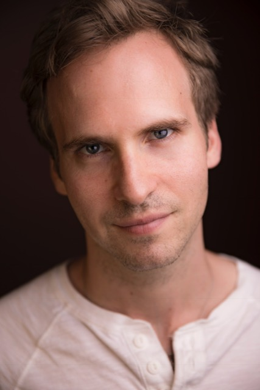

WHO WE IS

JUGHEAD FILM
Is a film collective created by Emma Horwitz and Claire Siebers in 2016 with the express purpose of making movies together.

TIFFANY CLIFTON
Studied Television, Film and Theater at Brooklyn College. She is honored to have worked with this incredible cast and crew of Power Lunch. Credits: [Theater] "Conversation with Death" (SF Theater Festival) "Monster" by Sabrina Paterson(Fringe Festival) ""Busted", "Chez Moi" and "Daughter/Father" written by Florencia Lozano. [Television] "Sesame Street."

JESS COLES
Is a filmmaker in New York City, where she was born and raised. You can see more of her work at jesscoles.com. (we have to put more of Jess's work into her bio...like Mary Marie...Emma, maybe you can help with that?
EMMA P HORWITZ
is the writer of this project who needs to submit a bio.
CLAIRE SIEBERS
Is a Brooklyn-based writer and actor. Writing Credits: Power Lunch, Genius in a Small Town (upcoming). Some Acting Credits include: [Theater:]The Workshop (with Austin Pendleton, softFocus), Pocatello/When You're Here (Williamstown Theatre Festival), Actors Theater of Louisville, Ars Nova, Clubbed Thumb, Lincoln Center, The Whitney Museum, The New Group, The Rattlestick, Under the Radar. [Film] "Other People."

LISA REGGIE FRANLIN
Lisa Reggie Franklin is a comedian from New York. She writes and draws a comic called "My Two Lesbian Ants," which you can find on Twitter and Instagram. Lisa has also been published on The Toast and once got a single joke into The Onion, but for legal reasons can't tell you what the joke was.

Ryan SPAHN
Ryan began his off-Broadway career in Branden Jacobs-Jenkins' Pulitzer Prize finalist Gloria at the Vineyard Theatre. He went on to appear in Michael McKeever's Daniel's Husband and Ike Holter's Exit Strategy, both for Primary Stages. His recent regional credits include Moscow Moscow Moscow Moscow Moscow Moscow at Williamstown Theatre Festival, Gloria at Goodman Theatre (TimeOut Theatre Award nomination), Exit Strategy at Philadelphia Theatre Company (Barrymore and DC Metro Arts Award nominations), Tribes at Actors Theatre of Louisville, and Sick at Berkshire Theatre Group. Feature film credits include Woven (LA Film Festival premiere, co-writer), He’s Way More Famous Than You (Slamdance Film Festival premiere, co-writer), and Grantham & Rose (Cleveland International Film Festival premiere, writer). He co-created the digital series What’s Your Emergency (Stage17.tv) and is a writer on Logo’s Cocktails and Classics. Ryan received his BFA from The Juilliard School.